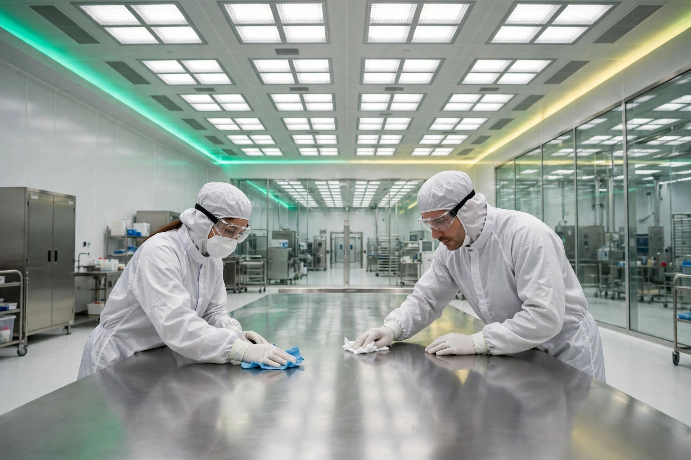
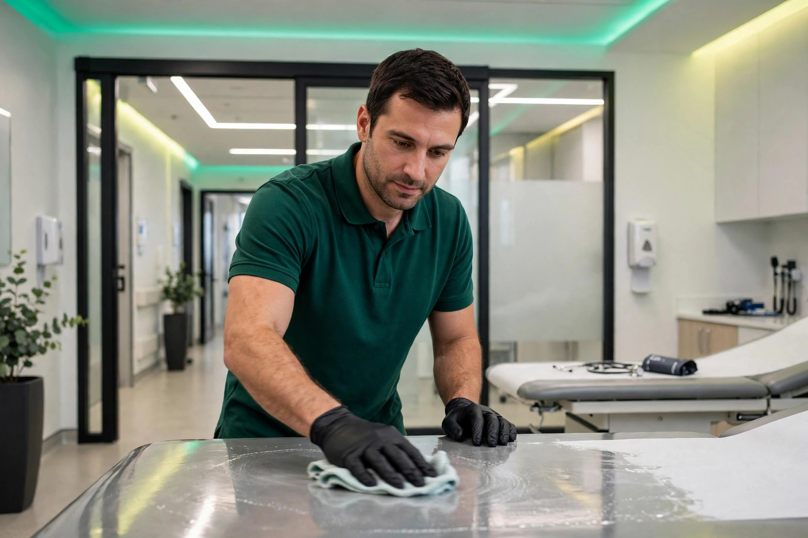
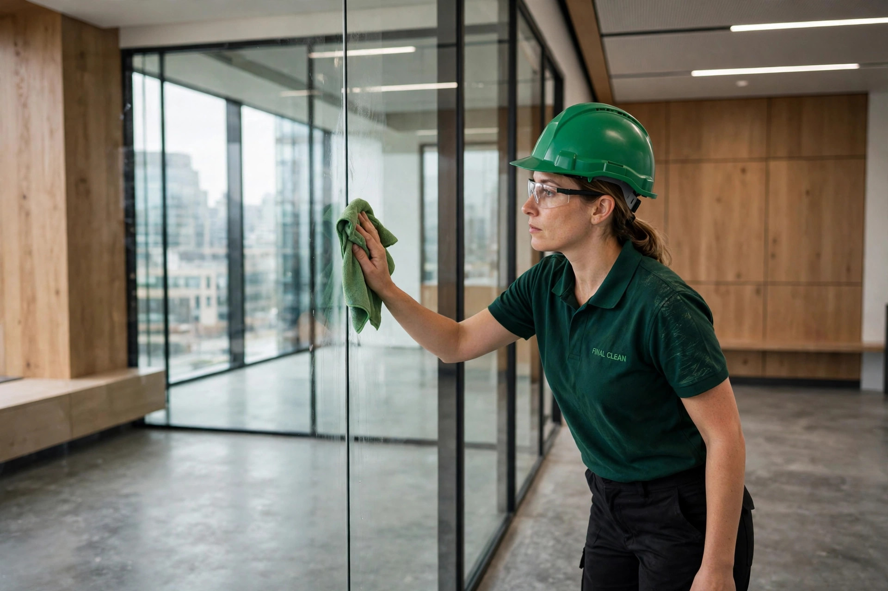

001
001Cleanroom & Labs
Protocol-led cleaning and documented service for controlled spaces.
Explore capability ↗For environments that can't settle for ordinary. Precision-led cleaning for cleanrooms, semiconductor spaces, healthcare, data centers and critical facilities—delivered by a committed, in-house team.

Built around your environment and protocols.
Not every facility can be cleaned the same way. We tailor the methods, schedules and oversight to the setting.
001Protocol-led cleaning and documented service for controlled spaces.
Explore capability ↗ 002
002Process-aware maintenance for fab-adjacent and microelectronics environments.
Explore capability ↗
003 004
004 005
005 006
006Reliable cleaning for workplaces, schools and specialty facilities.
Explore capability ↗
007 008
008Certifications held by Yvette Valenti, Owner & Founder — earned in the hardest work in the cleaning industry.
 YVETTE VALENTI — OWNER & FOUNDER
YVETTE VALENTI — OWNER & FOUNDERYvette Valenti earned her certifications where cleaning is hardest — crime scenes, biohazard scenes, hoarding cleanups — then built Flawless Bio Clean into an operation that carries that same standard into cleanrooms, data centers and commercial floors across Arizona. This company has been around for years. It shows.
“Clean. Safe. Flawless.
Down to a science.”
Start with your space. Pick the environment that matches yours and go straight to the service built for it.
Cleanroom or laboratoryControlled environments, handled to protocolSemiconductor / microelectronicsProcess-zone contamination controlMedical or dental officePatient-care and clinical spacesData center / server roomSensitive hardware, careful accessBiohazard / sensitive incidentHoarding, crime scene, disinfectionOffice / commercial spaceCommercial & specialty cleaningHome or AirbnbResidential, move-out and deep cleansPost-construction siteClose-out dust and residue removalUse our interactive scoping assistant to organize the essential details for a facility-specific cleaning discussion. Advanced operations start with the right questions.
Preview experience — generates an on-page scope outline only. No AI diagnosis, certification, price quote, live chat, or automatic submission.
We begin with the building, not a generic checklist. Every program starts by understanding where the risks, sensitivities and operating constraints are.
Our approach ↗Review facility zones, access restrictions, operating rhythms and the requirements supplied by your team.
Align team assignments, approved supplies, work instructions and documentation expectations.
Deliver dependable service, capture the required records and support clear ongoing coordination.
PRECISION / EVERY SHIFTFlawless Bio Clean is a family-owned Arizona company focused on spaces where consistent, careful cleaning is operationally important—from clinical settings to high-tech manufacturing.
Every facility has its own requirements. These are a few of the questions we hear most often.
One call routes you to the right service — no obligation, no pressure.
Call (480) 589-6200Flawless Bio Clean serves all of Arizona — from Phoenix to Tucson, Flagstaff to Yuma. Wherever your facility sits in the state, call (480) 589-6200 and the team will schedule coverage for your location.
Our existing cleanroom service information states that technicians work to facility-supplied protocols and gowning requirements. We'll confirm your documentation and classification requirements during scoping.
The company reports that work is completed by its trained in-house technicians, supporting consistent team assignments and accountability.
No instant quote is promised. We review facility conditions, cleaning frequency and scope requirements to prepare an appropriate proposal.
Owner Yvette Valenti holds certifications in crime scene cleaning, biohazard cleaning, cleanroom cleaning and data center cleaning — the hard specialties the company was founded on.
Flawless Bio Clean LLC is a family business founded and led by Yvette Valenti. She brings seven years of professional cleaning experience that began in biohazard work — hoarding cleanups, crime scene cleaning and COVID-19 disinfection.
Cleanrooms and labs, semiconductor facilities, medical offices, data centers, biohazard and crime scenes, commercial spaces, residences and Airbnbs, and post-construction sites — eight specialized services across Arizona.
Monday through Friday, 8 AM to 5 PM. Call (480) 589-6200 or email yvette@flawlessbioclean.com to start a conversation.